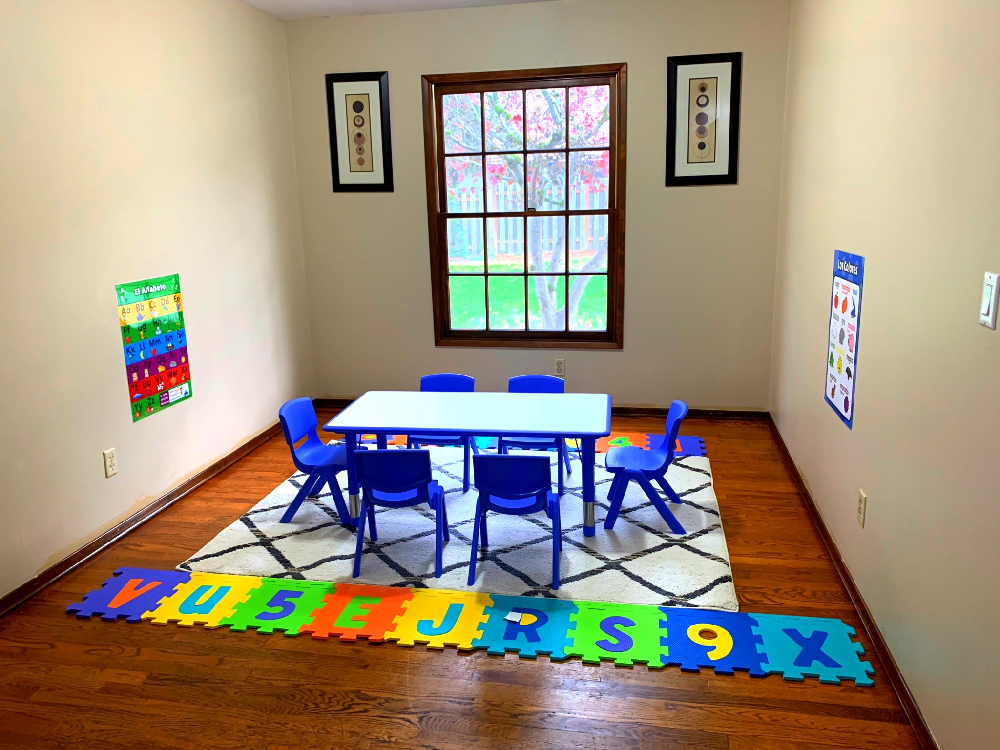
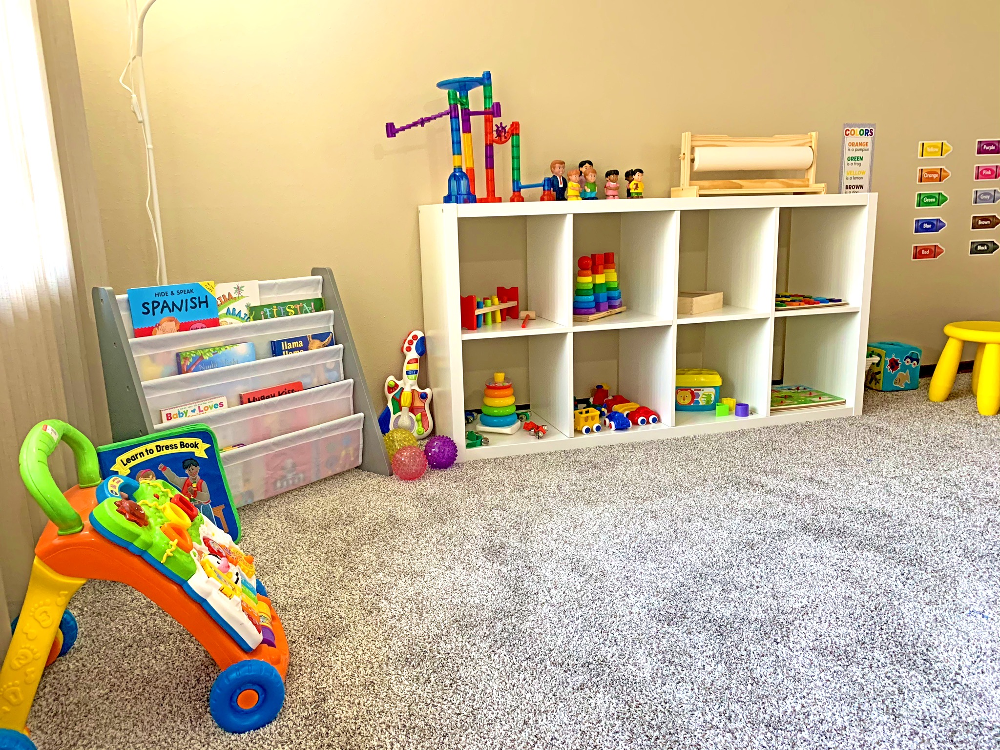

La infancia es una etapa fundamental en la vida de las personas, tanto así que una infancia sana en un ambiente acogedor, por lo general, forma un adulto íntegro, los principales cimientos de valores y conductas en la crianza son clave para el futuro.
Esta idea nace a través del entendimiento y de la importancia que tienen los colores en el crecimiento y el aprendizaje de los niños y de cómo se ven influenciados en su desarrollo cognitivo, por lo tanto Colorines representa y abarca todo lo que requiere el niño para su cuidado y formación en sus primeros años de vida.
Colorines sigue una filosofía educativa de enseñanza basada en el enfoque de Reggio Emilia, con un currículum emergente bilingüe. Nos esforzamos por crear una sociedad con cada familia para crear un ambiente positivo para cada niño.
Nuestro enfoque será crear una escuela activa, donde predomine la investigación y la reflexión siempre dentro de un entorno adecuado surgiendo de los intereses de los niños y de sus respuestas e interacciones con el ambiente, que facilite las relaciones de la escuela y la familia para que sea posible el bienestar del niño.
En colorines los niños están inmersos en español aproximadamente el 90% del día. Todos los niños son bienvenidos a nuestra guardería.
Colorines ofrece un ambiente rico en lenguaje hablado, de canciones y de lectura, para los bebes y caminadores, cuentan con muchas oportunidades durante todo el día, a lo largo de todas sus actividades, para comunicarse con otras personas y participar en interacciones recíprocas. Un buen ambiente es importante para el desarrollo temprano del cerebro de los niños y puede tener un fuerte impacto en el lenguaje temprano, el vocabulario, las habilidades de lectura y matemáticas, así como en el desarrollo social y emocional de los niños.
Característica de nuestro programa de infantes y caminadores:
* Fomenta el cuidado personal que responde a las necesidades e intereses individuales de cada niño.
* Frecuentes interacciones entre la maestra y los niños que fomenten la socialización y exploración.
* Experiencias divertidas que fortalecen las habilidades educativas, sociales y físicas.
* Experiencias curriculares basadas en la investigación que se han diseñado para garantizar la exploración y el aprendizaje significativo.
* Actividades y materiales apropiados para la edad que desarrollan confianza, conocimiento, autoestima y el amor por el aprendizaje.
¡Cada día los bebés y los niños crecen y aprenden a una velocidad fenomenal! A través del juego nuestro currículum esta diseñado para expandir la curiosidad natural de los niños y hacer frente a las habilidades que son la base del crecimiento de toda la vida y aprendizaje.
Nuestro programa para niños en edad preescolar los prepara para el ingreso al kindergarten.
Los niños preescolares se preparan para su primer gran paso en su viaje educacional – Kindergarten! El programa preescolar de Colorines prepara a los niños para la escuela enseñándoles conceptos como letras, números, figuras geométricas y colores y al mismo tiempo inculca un sentido de independencia, confianza y amor por el aprendizaje. Nuestro currículum de educación temprana es variado con experiencias instructivas y de juego. A los niños se les enseña todas los conceptos necesarios para fomentar el éxito de su transición al Kindergarten.
Patricia Gutiérrez.
Fundadora y Profesional en cuidado infantil.
Soy de origen venezolano, hablo español y tengo como segundo idioma el inglés. Soy licenciada en administración de empresa en mi país. tengo 4 años de experiencias en el cuidado de niños aqui en Oregon, tengo una credencial por el programa nacional de acreditación de desarrollo infantil del CDA. El programa CDA es diseñado para evaluar y acreditar a los profesionales de educación infantil temprana.
Desde pequeña me he sentido atraída por los niños y sobre su educación y hacia eso estoy encaminando mi futuro. Mi experiencia como estudiante durante todos estos años ha determinado mi propia filosofía profesional.
Yo considero al niño como potencialmente preparado, curioso e interesado para construir su aprendizaje, utilizando lo que el ambiente le tiende en su interacción social. Desde el punto de vista metodológico, desarrollo el intelecto del niño a través de la expresión simbólica, estimulándolo a explorar su medio ambiente y a utilizar sus mil lenguajes: palabra, movimiento, dibujo, pintura, construcción, teatro de sombras, drama, música, escultura. De igual manera, respetó el ritmo de cada niño, sin apresurarlos a cambiar de actividad.
Mi filosofía concibe como indispensable el bienestar emocional del niño para que pueda aprender, y de igual forma, el bienestar mío y padres de familia. Propongo a demás que la utilización del espacio, la ambientación y el material deben favorecer la comunicación y la relación entre los niños, así como actividades que promuevan diversas opciones y la solución de problemas en el proceso de aprendizaje.
En cuanto a mí, la enseñanza ofrece una oportunidad para el aprendizaje y el crecimiento continuo. Una de mis esperanzas como profesional en cuidado infantil es inculcar el amor al aprendizaje de los niños, ya que comparto mi propia pasión por aprender con ellos. Ayudar a los niños a desarrollar un profundo amor y respeto por sí mismos y hacia los demás creará un ambiente seguro donde a través de un intercambio abierto de ideas y un enfoque prudente a la disciplina será posible.


{kind=link}
{kind=link}